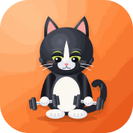

Back to the appTerms of use
Last updated 28 September 2026
The short version
- we go gim is free. There is no account, subscription or payment, so there is nothing to cancel.
- It gives general training guidance based on your own logs. It is not medical advice.
- Your data is yours and stays on your device. Keep a backup: if the phone is lost or its browser data is cleared, the app cannot recover it.
Health and safety
Talk to a doctor before starting a new exercise programme, especially if you are pregnant, injured, have a medical condition or are returning after a long break. Stop and get checked for chest pain, fainting, unusual breathlessness, palpitations, numbness, or sharp or radiating pain. Suggested weights and reps are estimates: use a spotter or safety bars for heavy lifts, and lift within your ability. The 3D muscle atlas is for learning, not for diagnosis.
Age
The app is meant for people aged 13 and over. Anyone under 18 should train with a parent's or coach's guidance.
No warranty
The app is provided "as is", without warranties of any kind. To the extent the law allows, the developer is not liable for injury, loss of data or other damage arising from its use.
Licences
The app's code is under the MIT licence. The 3D muscle model is from Z-Anatomy (from BodyParts3D, © The Database Center for Life Science), adapted by the FitMitWith anatomy atlas, under CC BY-SA 4.0. See the third-party notices.
Contact
Use Send feedback in the app, or open an issue on the GitHub repository. See also the privacy page.